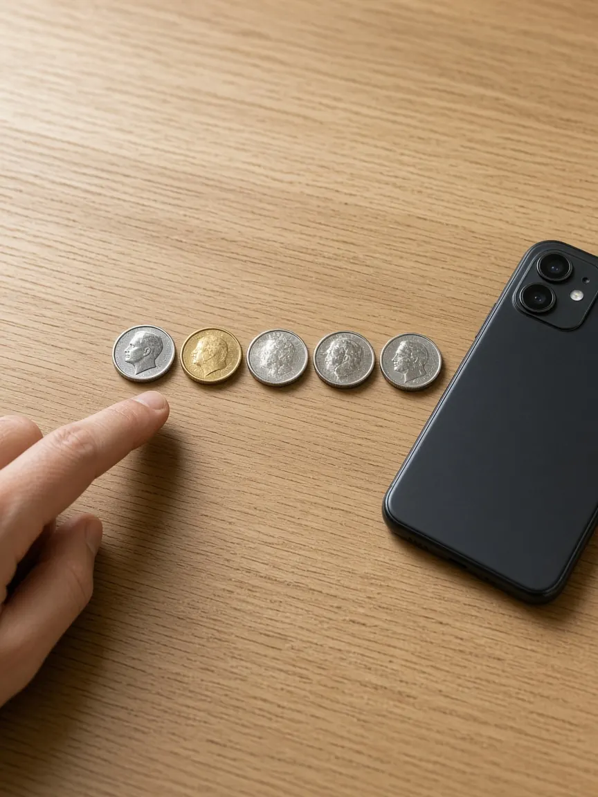
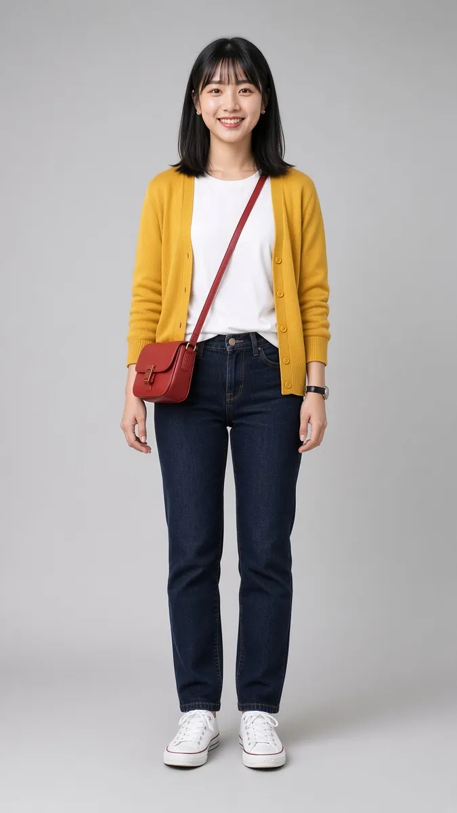

用 Flow 代理做 AI 漫劇
角色不換臉
先規劃 → 再建角色 → 再逐鏡確認
社大 AI 漫劇設計
今日目標與學員前提
學會用代理先規劃、再逐鏡生成，
做出 3–5 鏡、林曉晴不換臉的短漫劇
手機／平板為主就可以
App 與網頁都能用代理（以當天畫面為準）
免費方案為主
每天 50 點，用不完不累計
示範角色：林曉晴
約 24 歲、芥末黃針織外套，與上一課相同
示意圖，以上課當天畫面為準
手機 App ＋
電腦網頁皆可
講師 2026/11/24 實機確認最新版 App 已有代理；官方說明尚未更新，按鈕位置以上課當天畫面為準

免費每天 50 點，
用不完就沒了
所有帳號每天都有 50 點；從當天第一次生成起算，沒用完不會累積到明天。
訂閱另有每月點數（不累計；價格以官網為準）：
Plus NT$165／月 ＋200 點
Pro NT$650／月 ＋1,000 點
Ultra NT$3,300／月 ＋10,000 點
Ultra NT$6,500／月 ＋25,000 點
尖峰時段也能做什麼
台灣時間約 22:00–01:00（世界標準時間 14:00–17:00）
可能不能做
非訂閱者可能無法生成影片——別硬生成，以免空等或失敗
仍然可以做
生成圖像（目前不耗 Flow 點數，有每日張數上限）；
在手機 App 或網頁跟代理寫劇本、分鏡、代理指令
模型點數與
12/5 淘汰
點數按「每次生成」計算：輸出數量設 1，一次出 2 個結果就扣兩次。數字以當天「設定」畫面為準。
12 月 5 日淘汰，新作業別用
- ✕Veo 3.1 Fast（每次 20 點）
- ✕Veo 3.1 Quality（每次 100 點）
- ✕Omni Flash 1.1
4／6／8 秒同價
成片首選
適合打草稿
（10 秒鏡頭）
10 秒＝30 點
最耗點
什麼是
Flow 代理
- 專案裡的 AI 協作對象
- 用說的請它規劃、生成、整理
- 全球所有使用者都能用，免費也行
- 手機 App 與網頁版都能用
- 對話存成專案「工作階段」
- 刪聊天不會刪媒體
示意圖，以上課當天畫面為準
官方說明尚未更新，按鈕位置以當天 App／網頁為準
代理能做／不能做
查詢（對話）目前不耗 Flow 點數，
但每天有查詢上限（數字未公布）
- 規劃故事與分鏡
- 生成圖像與影片
- 編輯選取的素材
- 命名、收藏、代理指令
- 自動建立「角色」面板
- @角色 在代理一定有效
- 綁定自訂語音
- 手機與網頁功能全相同
- 生成前確認設「一律」
- 對話免點 ≠ 生成免點
- 代理不會自動剪片
- 換臉要自己逐鏡看
對話免點，生成要點
先確認再同意
代理查詢目前不耗 Flow 點數；生成影片照一般規則扣點，生成的媒體自動存進目前開啟的專案。
「生成前請先確認」設為「一律」：先看它要生成幾支、用哪個模型，再按同意。設「永不」會直接扣點。
完整流程總覽
先聊（不耗點）→ 先圖 → 先建角色 → 再一鏡一確認
故事靈感
代理對話
不耗點
劇本分鏡
只要文字
3–5 鏡
角色聖經
寫外觀服裝
出參考圖
建立角色
角色面板
寫代理指令
逐鏡生成
一次一鏡
輸出設 1
檢查
臉、髮、衣
失敗只重做
聲音
角色語音
或後製配音
剪輯成片
場景建構
或 CapCut
先請代理寫
劇本與分鏡
示範《夜市的氣味》4 鏡：
- 走進夜市（無對白）
- 小吃攤前聞到氣味
- 巷口等朋友、看手機
- 微笑走進燈火（無對白）
定稿前不要同意任何生成
每鏡約 8 秒：鏡號、景別、畫面、服裝、對白、英文提示
角色聖經與參考圖：林曉晴
約 24 歲成年角色・寫實真人照・全片鎖定
髮型與耳釘
及肩黑直髮＋空氣瀏海
銀色圓形小耳釘
紅色斜背包
紅色小皮革斜背包
背帶在左肩
目前生圖不耗 Flow 點數（有每日張數上限）

外套與穿搭
芥末黃針織外套＋白 T
深藍直筒牛仔褲＋白帆布鞋
左手細黑錶
細黑錶帶
戴在左手
在專案建立角色，並寫代理指令
實機示範
按鈕位置以上課當天畫面為準
4 同一專案做完
之後逐鏡生成都在這個專案裡
3 寫代理指令
參考圖＋外觀鎖定指南（範本 C）
2 建立角色
1–2 張參考圖、命名「林曉晴」
1 開同一個專案
手機 App 或網頁都能開代理
建立角色：官方完整步驟寫在電腦版；若當天手機 App 有入口，也可在手機完成
請代理逐鏡生成
一次一鏡、一次一個結果；手機 App 或網頁皆可
加入角色參考
拖入參考圖或選取專案素材；
已建角色就試 @角色名（以當天畫面為準）
先看確認，再同意
看清模型、秒數、輸出數量 1、預估點數；
不對就拒絕，改設定再來
第 1 鏡過關（臉、髮、衣、包、鞋、耳釘、手錶都對）再做第 2 鏡
檢查一致性，失敗只改那一鏡
每鏡都檢查：臉、髮、外套、褲、鞋、紅包、耳釘、左手錶
通過
8 項都對
臉型年齡、瀏海、芥末黃外套、紅包都在
外套變色
原因：顏色寫太含糊
寫清楚芥末黃針織，再拖入對的參考圖
多了配件
原因：提示太長
重申外觀鎖定，不加帽子、眼鏡
只重做那一鏡
範本 F
失敗片不當新參考，改回正確參考圖
聲音與剪輯成片
代理不保證語音一致：能做就做，做不到就降級
聲音
角色語音或 Omni 自訂語音；
做不到就輕聲／無對白，再後製配音
剪輯
電腦：場景建構排列、修剪、下載
手機：存到相簿，用 CapCut 接鏡、加字幕
（CapCut 非 Flow 官方工具，不耗點）
地區與方案限制以上課當天為準
可複製的代理指令（精選）
先讀懂中文，再複製英文送出；完整全文見講義第 6 節
範本 A｜只規劃不生成
現在只要文字，不要生成圖像或影片，也不要給我多種變化。
Text only for now. Do not generate any images or videos. Do not create variations.
範本 C｜代理指令鎖定句
本專案只要出現林曉晴，就必須是同一位約 24 歲台灣女性。
Whenever Lin Hsiao-ching appears in this project, she must be the same 24-year-old adult Taiwanese woman.
範本 D｜只生第 1 鏡
請只生成第 1 鏡，1 個結果，不要變化版本；保持人物完全一致。
Generate shot 1 only. One result. No variations. Keep identity and wardrobe locked.
範本 F｜只重做失敗那鏡
不要再用這支失敗影片當外觀參考；只重做這一鏡，1 個結果。
Do not use this failed clip as an appearance reference. Regenerate this shot only, one result.
一部短劇要幾點、幾天
＝50 點，剛好一天
前提：免費 50 點、輸出 1、Veo 3.1 Lite 8 秒、生成成功
3 鏡最保險
30 點，還能重做 2 次
5 鏡沒空間
50 點用完，不能重做
重做多就拆 2 天
第 1 天 1–2 鏡，第 2 天 3–4 鏡
尖峰先做文字與圖
對話、生圖 0 Flow 點
10 點 4 鏡成片
40 點
常見失敗與修正
課堂練習
先對話、再 1 張圖、最後只准 1 鏡
練習一｜只對話 約 15 分・0 點
範本 A 寫《夜市的氣味》4 鏡分鏡，檢查外套顏色、年齡有沒有被改
練習二｜1 張參考圖＋代理指令 15–20 分
範本 C 生 1 張（0 Flow 點），全班核對頭髮、外套、紅包、耳釘、手錶
練習三｜只准第 1 鏡 約 10 點
範本 D 先一起看確認卡再同意；失敗用範本 F 重做一次（再 10 點）
下課前不要連做第 2–4 鏡
把點數留給作業；按鈕位置以上課當天畫面為準
作業：2 天完成 3–4 鏡
繳交清單（沿用《夜市的氣味》，同一套芥末黃服裝）
- 分鏡表角色參考圖代理指令截圖
- 各鏡最終影片（接成短片、加字幕）
- 走樣與修正說明（100–200 字）
- 點數紀錄：哪天、幾點、哪個模型
評分重點：角色看起來是不是同一人
點數與按鈕以上課當天畫面為準